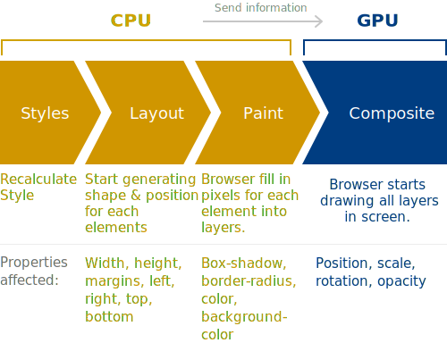

Smooth CSS GPU Animation
Animation Process
To understand how to achieve buttery smooth CSS animation, first we must understand how the browser renders elements. This timeline is called Critical Rendering Path. 
Using properties calculated in Layout phase
If you are using properties like left, right, top and bottom to animate, the browser will go through this whole flow for every frame.
So no wonder when using those properties to animate, it will be slow.
However, most modern browsers is smart enough to repaint only the changed area of the page, but while browsers go through this cycle very fast, the animation will not look smooth.
Animation affects child elements too
Another thing to note is with this type of animation, its children elements will also be recalculated, which slows down the reflow.

Animation done with GPU
To get the animation done with the GPU, we must utilize properties handled by the GPU only.
Using Transform
By using transform, the CPU just needs to provide a start and end calculation of the animation, and that's where the GPU fills in the gaps.
Conclusion
When animating, steer clear of using left, right, top and bottom properties to animate, as it uses the Layout step to generate it.
Instead, please use the transform CSS property wherever possible, as this affects the Composite step.
However, GPU still does have a limited memory and would still need a lot of processing power to animate each element. Can refer to this very comprehensive article on the pros and cons of animating CSS with GPU.
Furher reading:
CSS GPU Animation: Doing It Right
Smooth as Butter: Achieving 60 FPS Animations with CSS3
Tricks for GPU Composited CSS